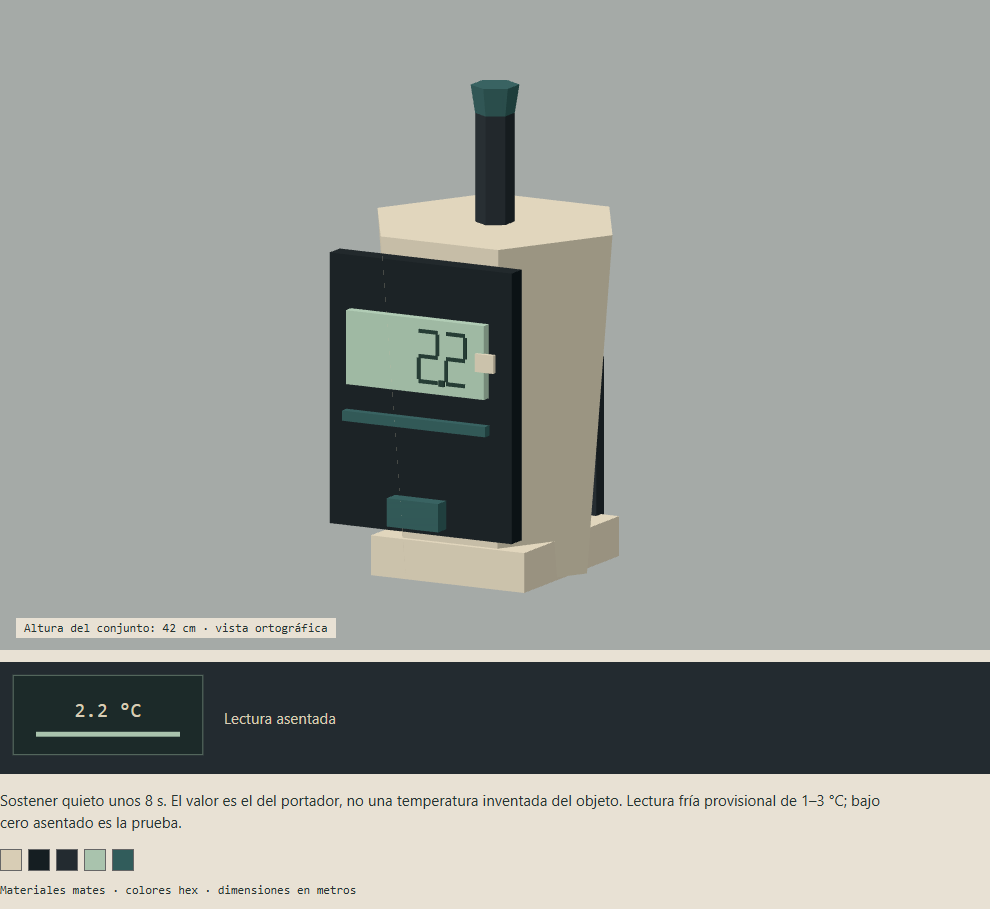

Referencias de las siete herramientas
Capturas reales de las fábricas Three.js. Los estados del taller son ejemplos controlados. UV y cámara mantienen la misma lectura local porque sus pruebas se observan en superficies o en el monitor de la base. Puedes girar el modelo y exportar una vista ortográfica PNG 2048 desde el taller.
Vista del conjunto · Ejemplo de PNG 2048 · Edición por piezas
Termómetro
Sostener quieto unos 8 s. El valor es el del portador, no una temperatura inventada del objeto. Lectura fría provisional de 1–3 °C; bajo cero asentado es la prueba.
Normal
Dudosa Positiva
Positiva Soporte plegado / configuración de mano
Soporte plegado / configuración de mano Ver en primera persona dentro del juego
Grabadora
Usar para preguntar; escuchar a oscuras, con una o dos personas y el ánima cerca. La onda diferencia silencio, estática y voz. La estática no cuenta. No identifica al ánima.
Ver en primera persona dentro del juego
Cámara de video
Dejar con G orientada al cuarto y consultar su monitor en la base. El visor local es de estado, no muestra la silueta. El tripié desplegado sitúa el objetivo a 132 cm, igual que la cámara virtual real.
Ver en primera persona dentro del juego
Sensor de gases
Colocar o llevar cerca del recorrido del ánima. La aguja responde a la acumulación y los temporizadores reales. Amarillo es dudoso, rojo es prueba.
Ver en primera persona dentro del juego
Paneles en móvil
WebKit con perfiles de iPhone 12; no es una medición de FPS de un teléfono físico.